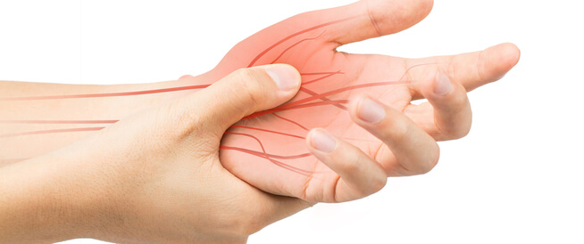

أعراض روماتيزم الأعصاب ومعلومات أخرى

يعاني الكثير من الأشخاص في الوقت الحالي من مشاكل روماتيزم الأعصاب خصوصا مع تقدم العمر وازدياد نسبة السمنة بين الأفراد، فما هو روماتيزم الأعصاب وأعراضه؟ وكيف يمكن علاجه؟ يعتبر مرض روماتيزم الأعصاب من أمراض المناعة الذاتية، بحيث يقوم الجهاز المناعي للجسم بمهاجمة أنسجة الجسم خصوصا المفاصل وبطانتها، مما يؤدي الى تولد الألم لديك وتورم المفاصل. في حال عدم تقديم الرعاية الصحية المناسبة لتلك الحالة قد يؤدي الى ظهور العديد من أعراض روماتيزم الأعصاب منها تشوهات في المفاصل وتاكل العظام وبالتالي عدم القدرة على أداء الوظائف الحركية. قد يتسبب أيضا روماتيزم الأعصاب في حدوث خلل في انسجة الجسم المختلفة مثل الرئتين والقلب والاوعية الدموية والعينين وغيرها من الأنسجة.